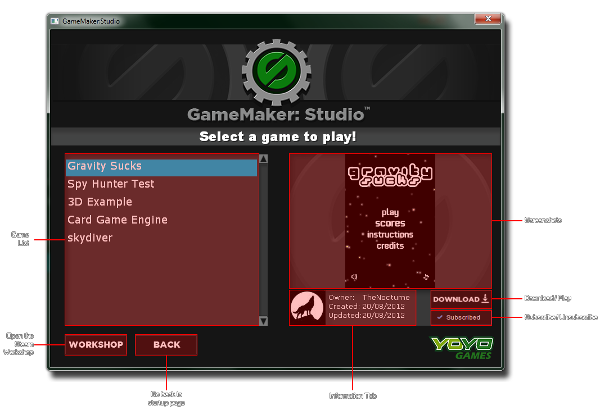

Steam Player
Here you can find all the information about the Steam Player.
If your copy of GameMaker:Studio has been bought through Steam, you will see that when you start GameMaker:Studio you are presented with a splash screen containing two buttons -
Play and Make. Pressing the Make button will open the standard GameMaker:Studio User Interface where
you can begin to create your own games, but pressing the Play button will open the Steam Player:

This player will be empty to start with as you must first visit the Steam Workshop and subscribe to the games that you wish
to play. Once this has been done, they will be visible in the Player (you may need to close and restart the Player for these changes to be visible) listed on the left hand side and selecting any one of them will
show a screenshot, user information and also permit you to download them by clicking on the "Download" button. Once they have been downloaded, this button turns into a "Play" button and clicking it again will
start the game.
 Beneath the Download/Play button is the Subscribed button. This can be used to unsubscribe the selected game from the player simply by clicking on it, which will turn the button into a green
Subscribe button.
You may click this again to re-subscribe to the game, but bear in mind that this option is only available until you close the player. Once closed all unsubscribed games will be removed
from the play-list and to re-subscribe you must search for them on the Workshop pages.
Beneath the Download/Play button is the Subscribed button. This can be used to unsubscribe the selected game from the player simply by clicking on it, which will turn the button into a green
Subscribe button.
You may click this again to re-subscribe to the game, but bear in mind that this option is only available until you close the player. Once closed all unsubscribed games will be removed
from the play-list and to re-subscribe you must search for them on the Workshop pages.
Finally, on the left of the player is the "Workshop" button and the "Back" button. The "Workshop" button will open up the Steam Workshop for you in your default browser, while the
"Back" button will take you back to the main start-up screen where you can choose to start GameMaker:Studio, or re-start the player again
(this button is only available when the player has been launched from the splash screen and not from GameMaker:Studio).